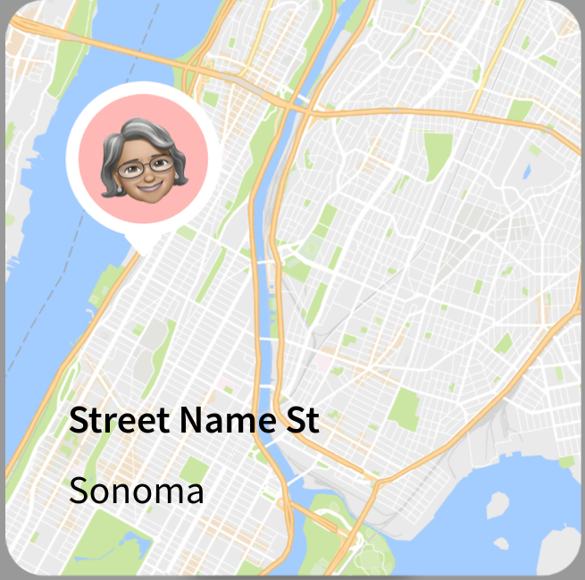

<ion-header>
  <ion-toolbar>
    <ion-title>Map Selector</ion-title>
  </ion-toolbar>
</ion-header>
<ion-content class="ion-padding">
  <ion-button (click)="closeModal()">Close</ion-button>
  
  <ion-button (click)="submitModal()">Submit</ion-button>
</ion-content>
